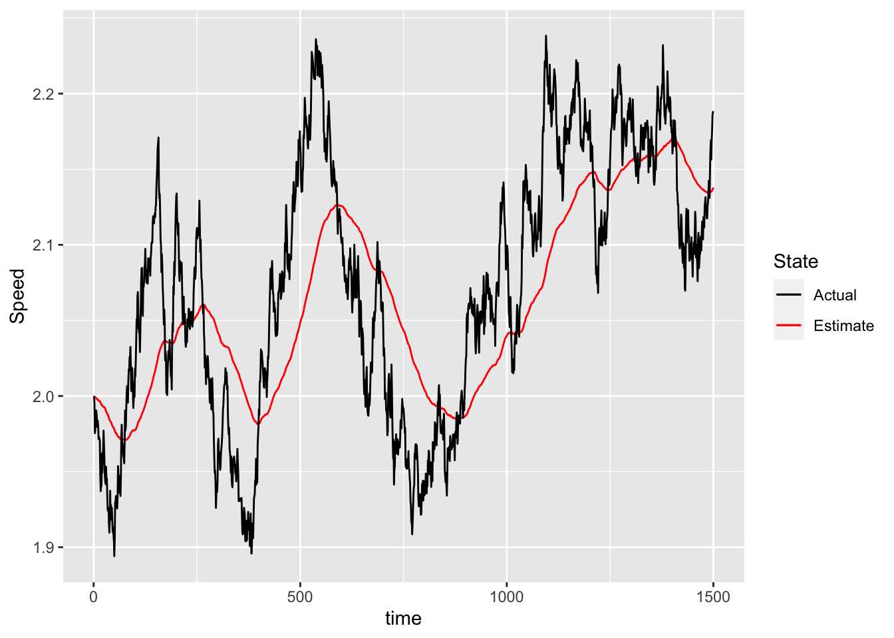

Unlike before, now we have a two states space model: position and speed. We will simulate a uniform motion (i.e. constant speed), so the stimulus dynamics is defined as follows:
\[\mathbf{y}_{t} = H\mathbf{x}_t + v_t,\ \ p(v_t) \sim \mathcal N(0,R)\] But the uncertainty is also a two states matrix, one uncertainty for position and another for speed:
Note that the matrices are different to campture the two states and the dynamic. We assume we have an ideal observer, so the observation matrix \(C\) is consistent with the observer to sense the position and velocity with some sensory uncertainty.
dt <-1/90# sampling rateA <-matrix(c(1,0,dt,1),2,2) # Just one componentC <-diag(1,2,2) # #kf = kfOscillation(q_pos=0.01,q_vel=0.001,sigma_p=0.05,sigma_v=0.022,dt=1/90,freq=0.1)V =diag(c(0.01,0.00001),2,2) # process noiseW =diag(c(0.02,0.001),2,2) # observation noise
Now we can simulate some sequences:
N <-1500s1 <-simulSequence(A,C,V,W,x0 =c(0.0,2),xhat0 =c(0,2),T=N)dd <-data.frame(time=1:N,x=s1[,1],xhat=s1[,2],v=s1[,3],vhat=s1[,4])ggplot(dd) +geom_line(aes(time,xhat,col="Estimate"),linewidth=1.5,alpha=0.5) +# the process or stategeom_line(aes(time,x,col="Actual")) +scale_color_manual("State",values=c("black","red")) +ylab("Position")
ggplot(dd) +geom_line(aes(time,v,col="Estimate")) +# the process or stategeom_line(aes(time,vhat,col="Actual")) +scale_color_manual("State",values=c("black","red")) +ylab("Speed")

We try to estimate the sensory uncertainty. Since we estimate 2 parameters, we will use optim rather than optimize.
dim(s1) <-c(N,1,4) # N sample, 1 trial, 2=1 state + 1 estimateoptim(par=c(0.01,0.010),PosVel.op,x=s1)
$par
[1] 0.0198347588 -0.0009944305
$value
[1] 743779395
$counts
function gradient
43 NA
$convergence
[1] 0
$message
NULL